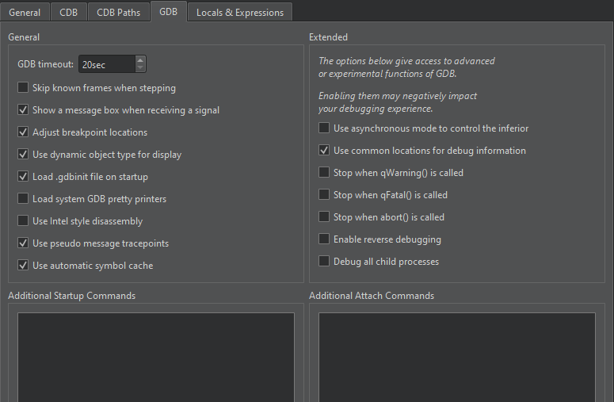

Debugger Preferences
To specify settings for managing debugger processes, select Preferences > Debugger. In the General tab,you can specify settings that are common to all debuggers.

You can customize the appearance and behavior of the debug views, specify settings for breakpoints, and map source paths to target paths.
You can view debug output in the Debugger Log view. However, in some Linux distributions, such as Arch Linux, debug output is sent to the system log. To override this behavior, select the Force logging to console check box. This sets QT_LOGGING_TO_CONSOLE=1 in the environment of the debugged application, which effectively prevents storing debug output in system logs.
Mapping Source Paths
To enable the debugger to step into the code and display the source code when using a copy of the source tree at a location different from the one at which the libraries were built, you can map source paths to target paths.
To automatically map the source paths to a Qt version that has not been patched, select Add Qt Sources and browse to the location of the Qt source files.
To manually map the source paths to target paths:
- In Source Paths Mapping, select Add to add an entry to the path list.
- In the Source path field, specify the source path in the debug information of the executable as reported by the debugger.
- In the Target path field, specify the actual location of the source tree on the local machine.
Specifying GDB Settings
To specify settings for managing the GDB process, select Preferences > Debugger > GDB.

To specify a timeout for terminating non-responsive GDB processes, set the number of seconds to wait in the GDB timeout field. The default value of 20 seconds should be sufficient for most applications, but if loading big libraries or listing source files takes much longer than that on slow machines, you should increase the value.
To compress several steps into one step for less noisy debugging when stepping into code, select the Skip known frames when stepping check box. For example, the atomic reference counting code is skipped, and a single Step Into for a signal emission ends up directly in the slot connected to it.
To display a message box as soon as your application receives a signal, such as SIGSEGV, during debugging, select the Show a message box when receiving a signal check box.
GDB allows setting breakpoints on source lines for which no code was generated. In such situations, the breakpoint is shifted to the next source code line for which the code was actually generated. To reflect such temporary changes by moving the breakpoint markers in the source code editor, select the Adjust breakpoint locations check box.
To specify whether the dynamic or the static type of objects will be displayed, select the Use dynamic object type for display check box. Keep in mind that choosing the dynamic type might be slower.
To allow reading the user's default .gdbinit file on debugger startup, select the Load .gdbinit file on startup check box.
To use the default GDB pretty printers installed in your system or linked to the libraries your application uses, select the Load system GDB pretty printers check box.
By default, GDB shows AT&T style disassembly. To switch to the Intel style, select the Use Intel style disassembly check box.
To have GDB automatically save a copy of its symbol index in a cache on disk and retrieve it from there when loading the same binary in the future, select the Use automatic symbol cache check box.
To execute GDB commands after GDB has been started, but before the debugged application is started or attached, and before the debugging helpers are initialized, enter them in the Additional Startup Commands field.
To execute GDB commands after GDB has successfully attached to remote targets, enter them in the Additional Attach Commands field. You can add commands to further set up the target here, such as monitor reset or load.
To execute simple Python commands, prefix them with python. To execute sequences of Python commands spanning multiple lines, prepend the block with python on a separate line, and append end on a separate line. To execute arbitrary Python scripts, use python execfile('/path/to/script.py').
Extended GDB Settings
The settings in the Extended group give access to advanced or experimental functions of GDB. Enabling them may negatively impact your debugging experience, so use them with care.
To use asynchronous mode to control the inferior, select the respective check box.
To add common paths to locations of debug information, such as /usr/src/debug, when starting GDB, select the Use common locations for debug information check box.
To stop when qWarning, qFatal, or abort is called, select the respective check box.
To enable stepping backwards, select the Enable reverse debugging check box. This feature is very slow and unstable on the GDB side. It exhibits unpredictable behavior when going backwards over system calls and is very likely to destroy your debugging session.
To keep debugging all children after a fork, select the Debug all child processes check box.
Specifying CDB Settings
To specify settings for managing the CDB process, select Preferences > Debugger > CDB.

You can specify additional arguments for starting CDB in the Additional arguments field.
If a console application does not start up properly in the configured console and the subsequent attach fails, you can diagnose the issue by using CDB's native console. Select the Use CDB console check box to override the console set in the Windows system environment variables. Note that the native console does not prompt on application exit.
To automatically add a breakpoint on the CrtCbgReport() function, select the Stop when CrtCbgReport() is called check box. This catches runtime error messages caused by assert(), for example.
In the Break on group, specify whether the debugger should break on C++ exceptions, on thread creation or exit, on loading or unloading the specified application modules, or on the specified output.
To disable first-chance break on access violation exceptions, select the Ignore first chance access violations check box. The second occurrence of an access violation will break into the debugger.
CDB enables setting breakpoints in comments or on source lines for which no code was generated. In such situations, the breakpoint is shifted to the next source code line for which the code was actually generated. To reflect such temporary changes by moving the breakpoint markers in the source code editor, select the Correct breakpoint location check box. For more information, see Setting Breakpoints.
To use the abstraction layer of Python Dumper classes to create a description of data items in the Locals and Expressions views, select the Use Python dumper check box. For more information, see Debugging Helper Implementation.
To display information about first-chance and second-chance exceptions in Issues, select the check boxes in the Add Exceptions to Issues View group.
Setting CDB Paths on Windows
To obtain debugging information for the operating system libraries for debugging Windows applications, add the Microsoft Symbol Server to the symbol search path of the debugger:
- Select Preferences > Debugger > CDB Paths.

- In the Symbol Paths group, select Insert.
- Select the directory where you want to store the cached information. Use a subfolder in a temporary directory, such as
C:\temp\symbolcache. - Select OK.
Note: Populating the cache might take a long time on a slow network connection.
To use the Source Server infrastructure for fetching missing source files directly from version control or the web, enter the following string in the Source Paths field: srv*.